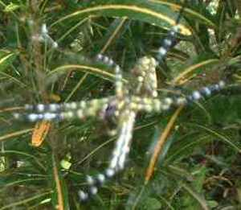

kalawe-lawè 
/kalawɔʔlawɔʔ/
n.
Araneida_spp.
spider
Ka seini iyan sika se egmambabaley te maselem selem diyè te dalan wey diyè te katalunan ne mallamiket ka baley ne egsaharan te me kalabi-labi wey ka dereisek ne kalibangbang ne iyan dan pegkeen.
Kenè kew ubal te kalawe-lawè su eg-anitan kew
Dont play with a spider because there is a consequence of it.
Eng. spider
Tag. gagambá; álalaà; láwalawà
Ceb. láwà
Ilo.: lawalawá
OCM: Fauna (136)
DDP: Spider (1.6.1.8)
Idiom: baley te kalawe-lawè
—cobweb (lit. house of spider)
Online dict status: -
Usage level: B
Updated by: RJH,TME,QDL,NJK
Last updated: 13/Oct/2009
This page last updated: 28-Dec-2019
Copyright © 2009-2014, Matigsalug Language Christian Association, Inc